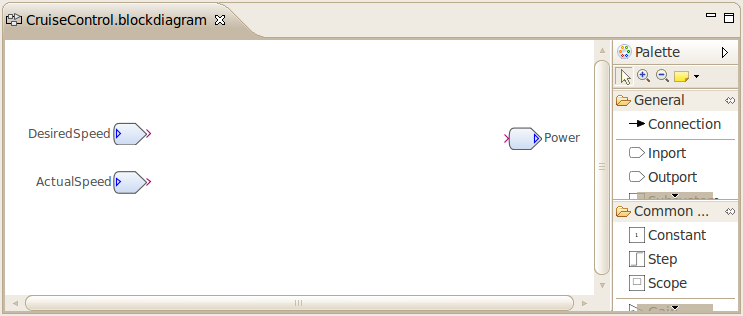

| Generating C Code |
|---|
 | | |
| Creating and Simulating a Damos Model | | |
Generating C Code
In this section you will learn how to generate C code from a Damos model and how to integrate the generated C code in existing applications. We assume that you read the previous topic and know how to create a basic Damos model.
Example Model
The example model will be a simple PI controller-based speed control with an anti-windup circuit. The inputs of the controller will be the desired speed and the actual speed. The output value (i.e. engine power) will be limited to a value between 0.0 and 1.0 (0% to 100%). The anti-windup circuit is needed to prevent the integrator to windup when the maximum output power is reached.
To create the example model:
- Create a new block diagram in the model folder of a new Damos project (see previous topic for more details):
- Create a new Damos project (File > New > Project... and then select Damos > Damos Project).
- Create a model folder in the new Damos project.
- Create a new block diagram in the model folder (File > New > Other... and then select New Block Diagram).
- From the General palette drawer, add two Inport blocks and one Outport block to the block diagram.
- Red markers will indicate that the data types are missing. To fix this, specify real as data type for all Inports and Outports using the Properties view. Alternatively, you can use the quick fix from the tool tip of the error marker.
- Name the two Inports DesiredSpeed and ActualSpeed, and the Outport Power.
- Optionally, for each Inport and Outport select Show Name in the Appearance property tab to show their names.
The block diagram should look as follows:

You may ask, why do we need these Inports and Outports? As we will later see, those blocks will represent the interface of our system in the generated code.
Creating Generator Configuration
Generating Source Code
Integrating the Generated Code in Existing Applications
|  | |
| Creating and Simulating a Damos Model | | |